This project was designed to apply the coding techniques we’ve learned in our Java class to a practical and functional program. I worked with a team of 2 other students to design and develop a playable game of checkers using Java and JavaFX.
The goal of our project was to develop a stable and working version of checkers, then provide other features based on our knowledge of Java. This highlighted the use of methods and object-oriented programming to simulate actions in checkers.
The project was developed over a couple of months during the covid 19 epidemic which resulting in face to face meetings as a team being prohibited. Considering the fact most if not all of our college studies were moved to an online format, our team had to not only adapt to learning in a new environment, but also collaborating in one as well.
The features of the project include a completely playable game of checkers with an end screen, restart board screen, and save and load features. The game has no network or online connectivity and is meant to be played on one solo machine. There is also no AI present in the program. Lastly, there’s debug options labeled “God Powers” and a options to change the layout of the program.
Specifically, I worked on:
Throughout the project each of us were learning more about java as the project was being developed. This resulted in much of the code being outdated or changed as the semester progressed. I know of some errors in the code that were unable to be resolved before the deadline of our project and I learned a lot in working on this program. If I were to redo this program again, I would make a lot of changes to the initial design, function, and code structure.
In my studies one subject I’ve often explored is data analysis through the preprocessing and post processing of data. Currently I’ve done 2 different semester-long projects that fall under this category:
I love to talk about these projects because they were fun and insightful, but both projects speak for themselves pretty well.
Each game has its own dedicated webpage on a separate site where the game can be played. Therefore only a small snippet of the game will be provided here.
| A single level 3D platformer made in Unreal Engine 4. An opened world with lots to discover. Must download to play (Windows Only) | |
| An adventure game with secrets to find and puzzles to solve. Playable on the website. |
These games are special because instead of being completed over the course of a couple months, they were completed in a weekend (48 hours) under strict deadlines.
| 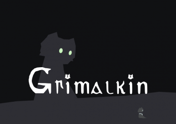 |
2 player game where one person leads another through a confusing world with an out of game map.
Must download to play. (Windows Only)
|
| 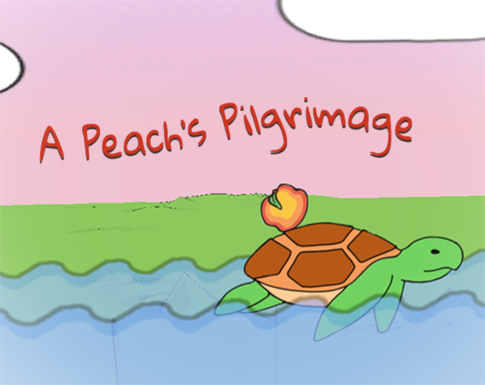 |
A physics based side scroller where you play as a rolling peach in a side-scrolling adventure.
Works in a browser but better if you download
the game for Windows. (Web or Windows)
|
A Peach's Pilgrimage is also avalible up on Itch.io
I’ve always been interested in AI generated photos and how they work. This project helped me connect how an AI can train off of an image-set and manipulating that dataset can affect the final product. Stable Diffusion is an open source image generation model that uses deep learning to turn text based prompts into images. It uses a variety of models trained off of different image-sets, and has tons of flexibilities to allow for even more customization of the images. One of these extension is a LoRA which stands for “Low-Rank Adaptation”. The goal of a LoRA is further train a model for a more specific task instead of generating images for multiple possible situations. I trained a LoRA to generate the character Banette from the Pokémon franchise. I did this because I wanted to learn more about the process of training, and because Banette is my favorite Pokémon.
Link to LoRA: https://civitai.com/models/182515
To run this LoRA file, you need a way to run stable diffusion. If you want to run it locally on your computer, I recommend using stable-diffusion-WebUI and getting the model PurrfectMerge_v1. Other models will work, but this is the main model I used for testing.


 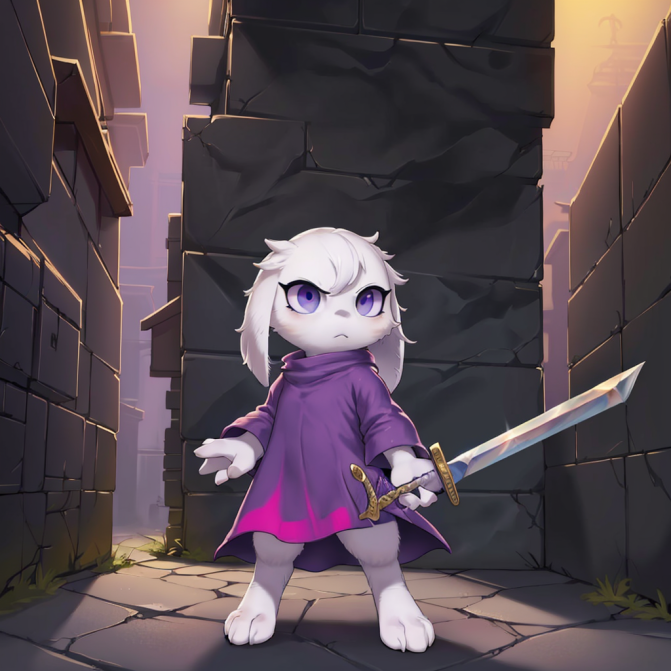
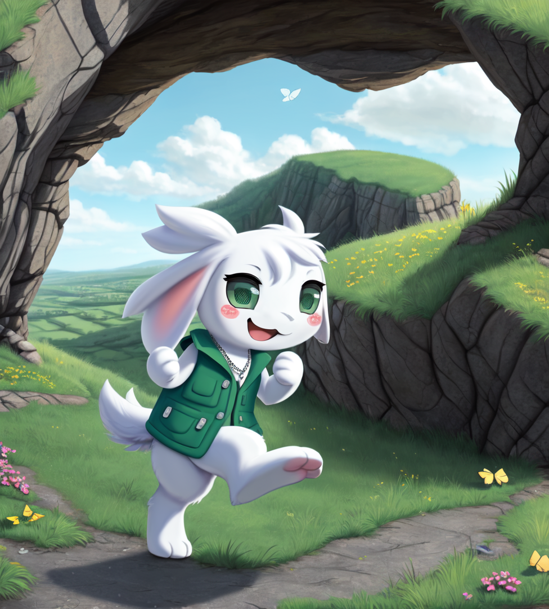
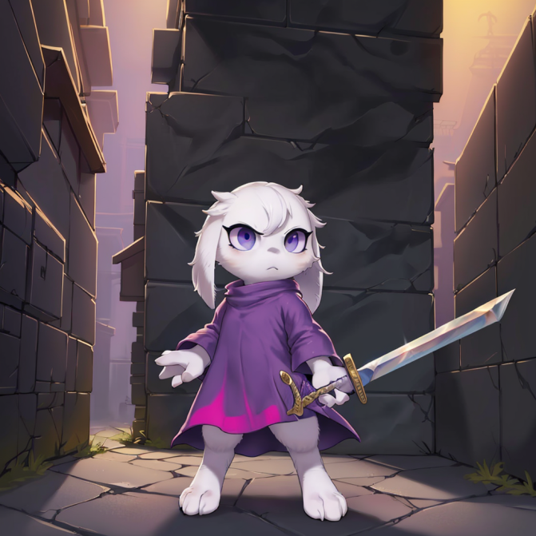
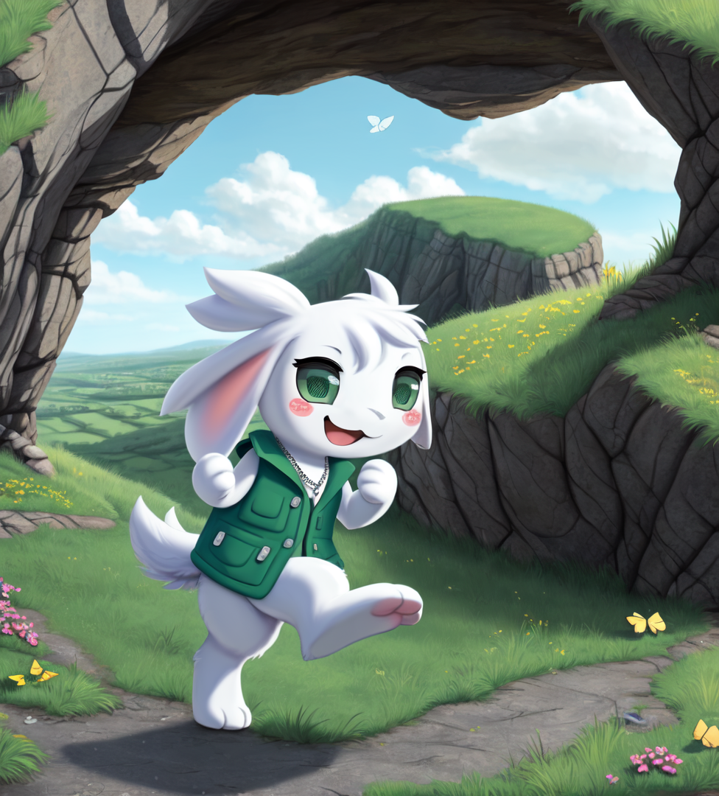
 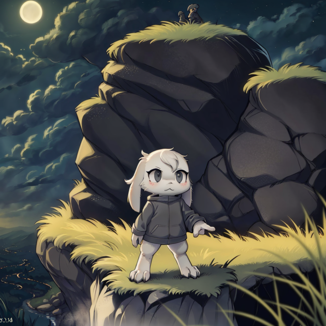
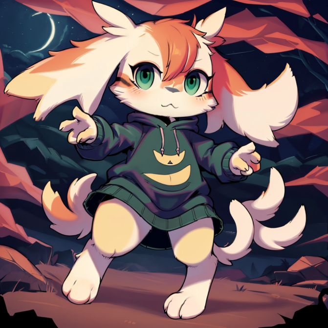
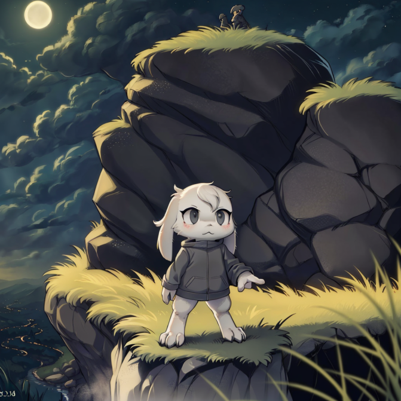
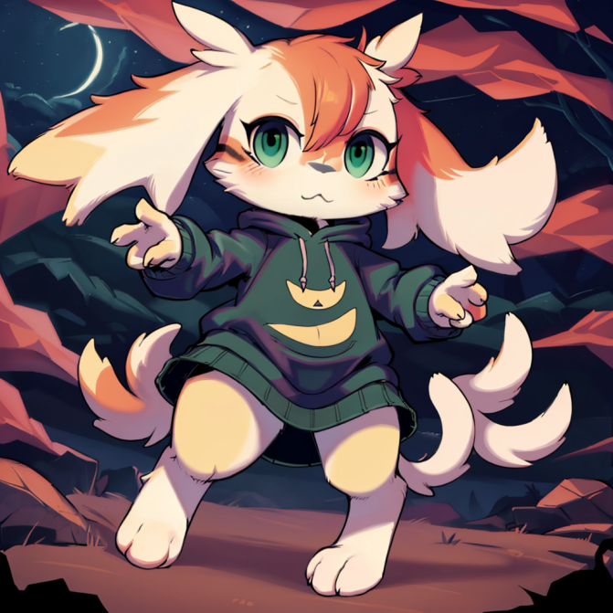
I’ve made a couple of tracks at my time at the university. I learned about the process in a class titled Video Game Music. I then used those skills in a couple other classes including actual video game music or songs for class videos.
I published all of these on YouTube under the title of “Academic Jams” and that playlist can be found here, or the individual are available in the provided YouTube frames.
Below are two videos I helped create for different classes. Both are very unique, so they deserve their own descriptions.
THE NEWASS NEWSCAST |
Beowulf The Dragon's Tale |
|
A college project with the goal of educating a group of students about the kingdom of Assyria.
The goal of the video was to create a unique teaching tool to better explain our research and findings from previously written research papers.
Overall the quality of the video and the content within are pretty good considering it took 2 days to film and 3 days to edit.
My duties in this project included scriptwriting, group organization, film planning, gathering equipment, and editing. It also features the song Bad News which was composed specifically for the ending. [Made in 2021] |
A Highschool project retelling the events of the final act of Beowulf.
Filmed and edited in the span of a week, it was a relic of its time.
It was made in the span of a week on a free editing software and a green sheet held up by clamps in the basement of my parent’s house.
This project helped inspire my creativity and structural skills to put together a finished project, and although the video isn’t perfect in my eyes,
it was a memorable moment in my life that helped me develop my creativity.
My duties in this project included scriptwriting, group organization, filming, set building, lighting, gathering equipment, and editing. [Made in 2019] |
I’ve worked with databases a considerable amount and enjoy charting Entity Relationship (ER) diagrams.
I also know at least the basics of SQL including creating and merging tables.
HTML and JavaScript were some of the first programming languages I worked in and therefore have a soft spot in my heart for housing some of my earliest programs. The language is very versatile in many aspects, and I still recommend it for those looking for a place to start.
Here are some webpages I programmed that I find significant of presenting despite them being from a time when I had not yet developed many skills and techniques of programming.
Please note that the purpose of these websites was not to create aesthetically pleasing webpages, but rather to use math, logic, and problem solving to complete a task.
| Bird Project | 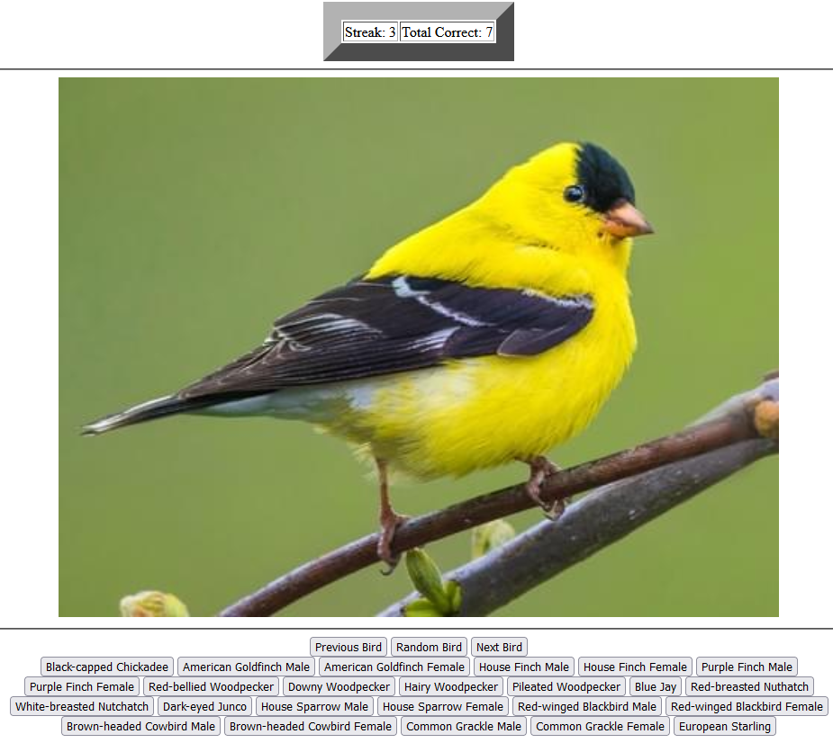 |
A personal project I started working on my second semester of college.
I made the website to help me learn the different species of backyard birds found in the Wisconsin area.
|
| Number Guesser (Binary Search) | 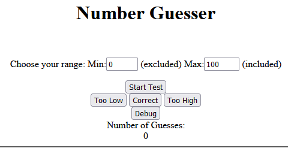 |
A project for one of my first classes that involved finding a number through a binary search method
to optimally find numbers by splitting the amount of places to search in half.
|
| Text Manipulator | 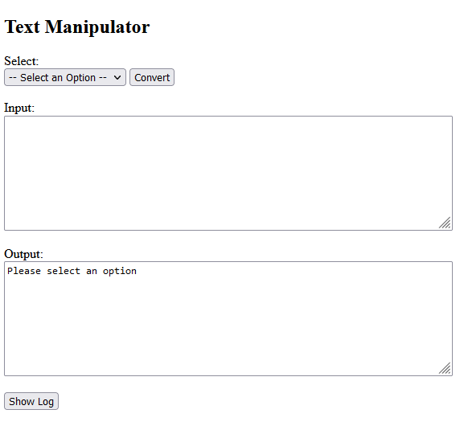 |
A small side project to help me better understand methods attached to strings. Complete with input, output, and log.
|